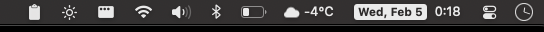

My Mac Setup
Device
I recently switched to a base M3 Macbook Air. The starlight color is pretty nice.
Settings
Always turn off the natural scrolling in the trackpad scroll if you ever plan to switch back and forth between using a mouse and the trackpad
Menu Bar tools
Terminal
omf install krisleechomf theme krisleech